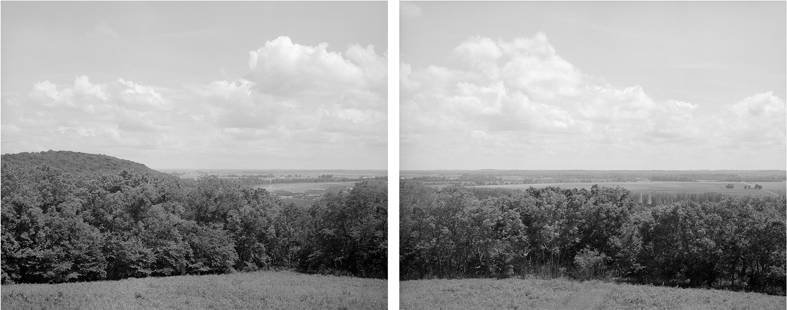
Pictures made summer of 2021 near home, informed by the root word nemo
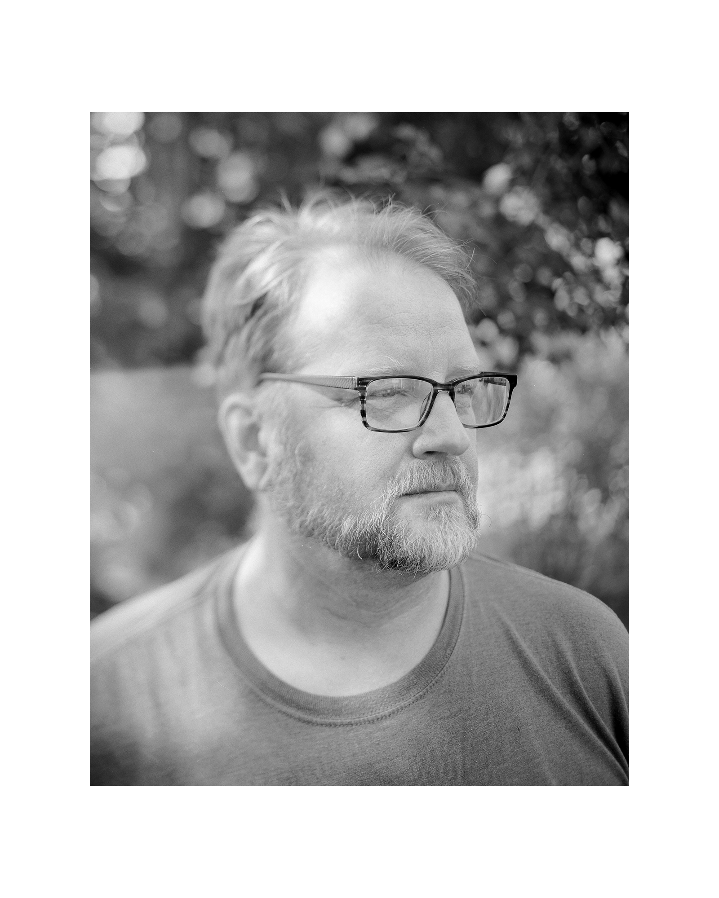

NEMO — a nickname for Northeast Missouri
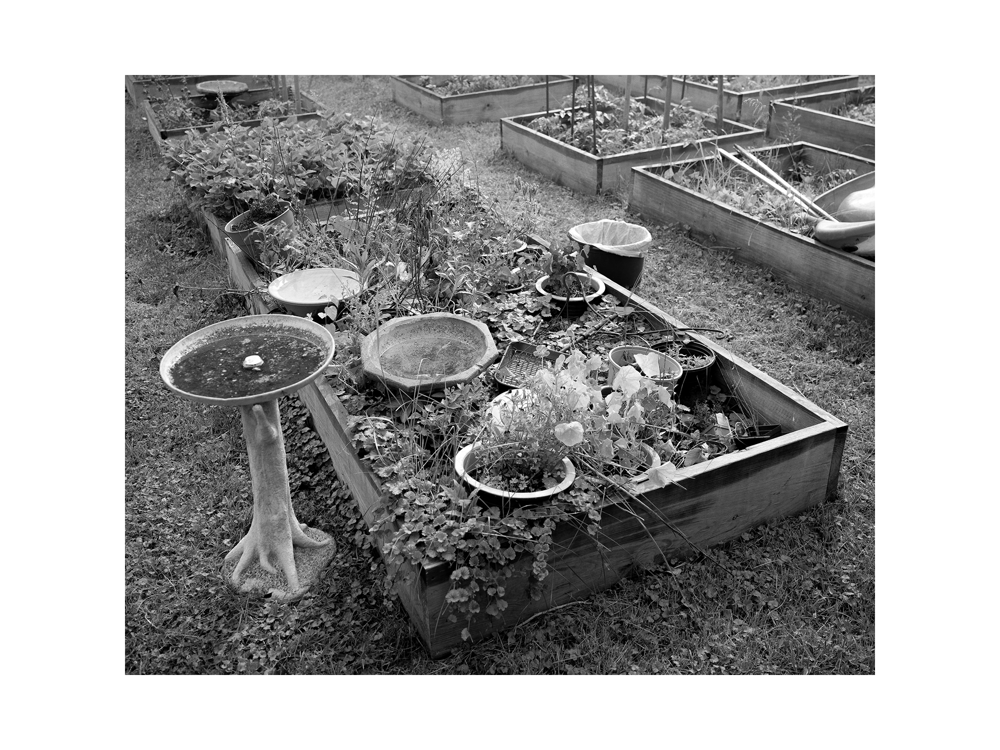

nemo — Latin for no one, no name, or anonymous
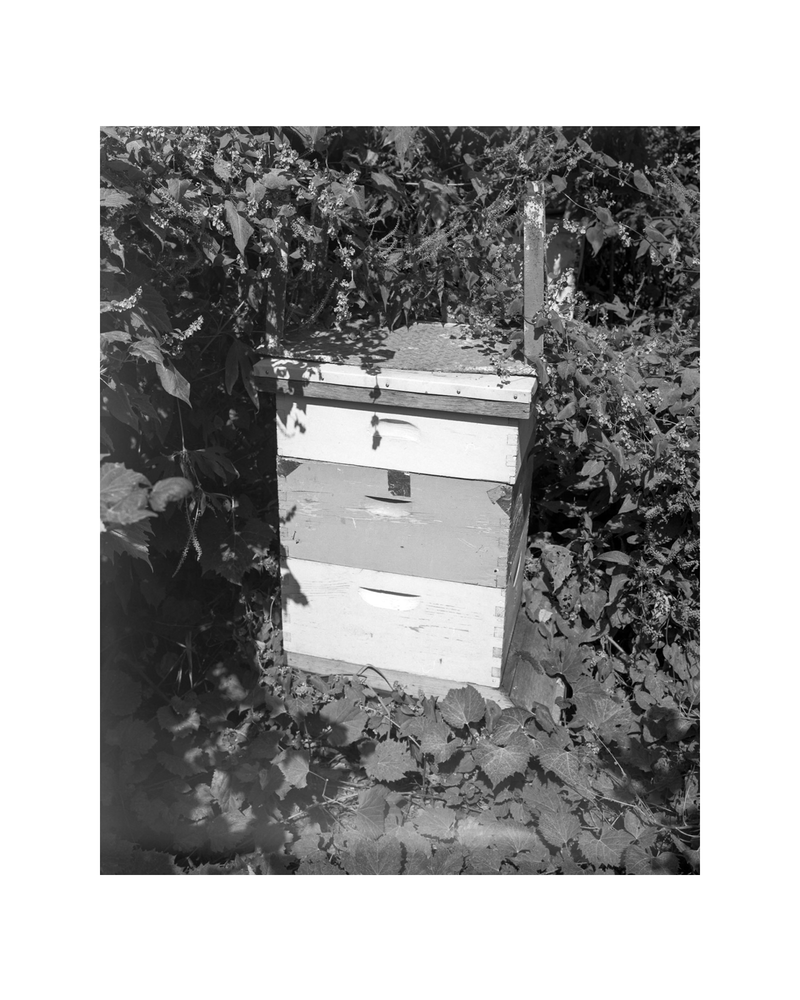
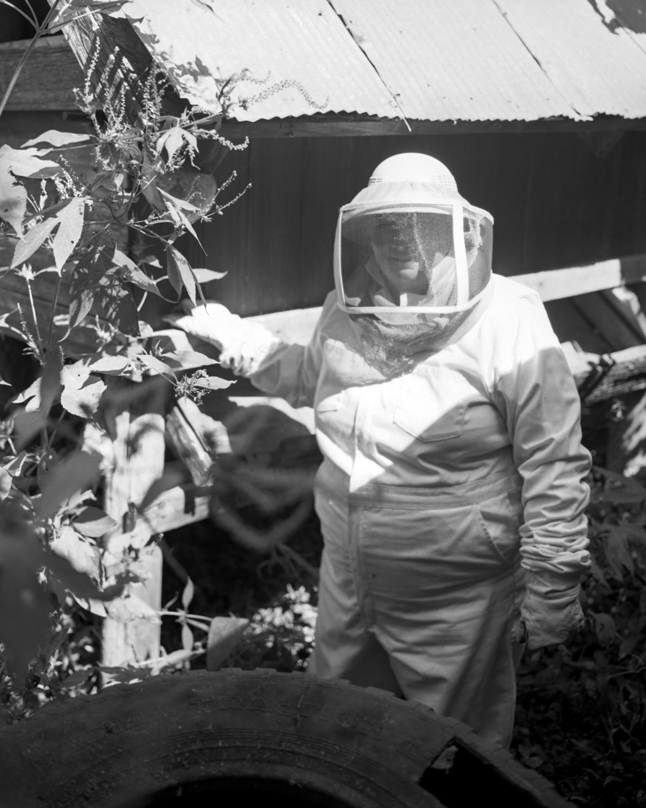
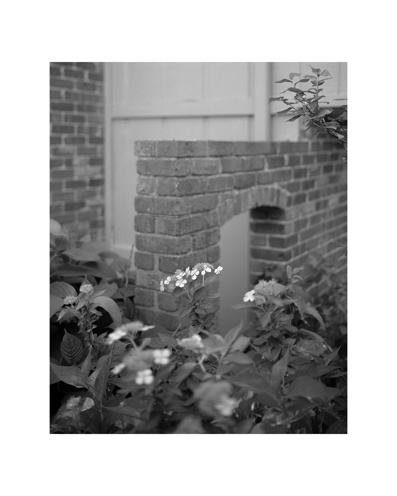

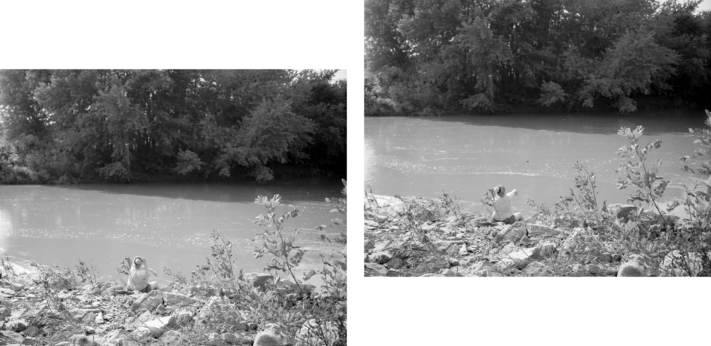

 nemos — Greek for grove, wooded pasture, or glade
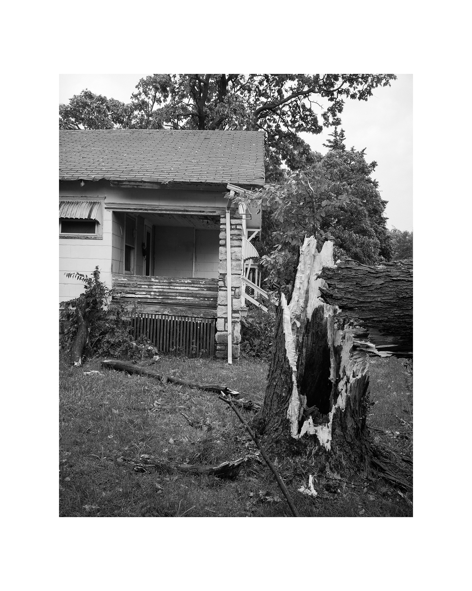
nemos — Greek for grove, wooded pasture, or glade
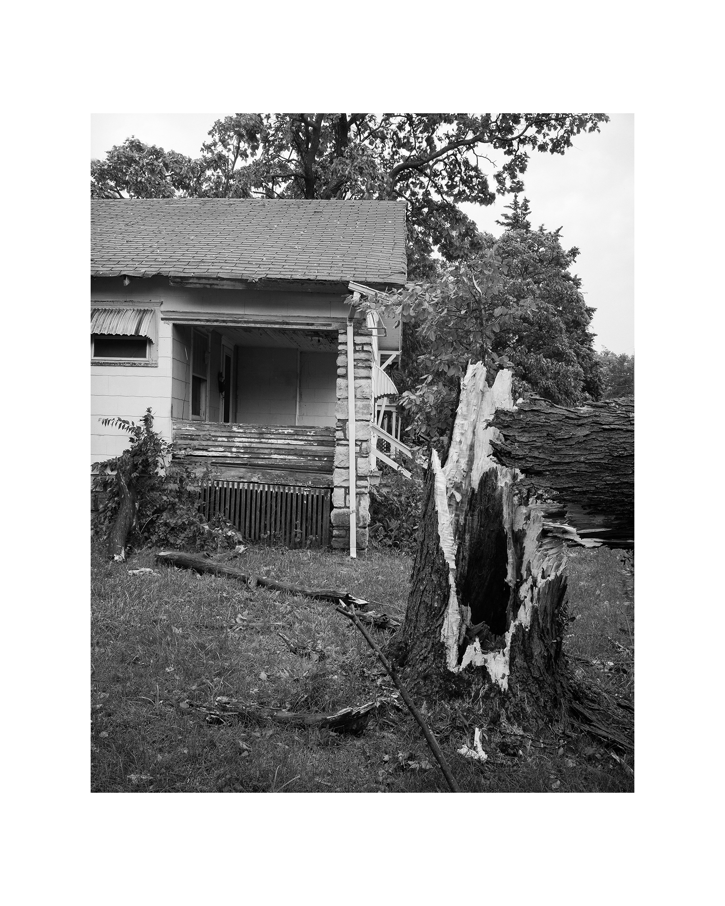


nemophilist — a person fond of forest or trees

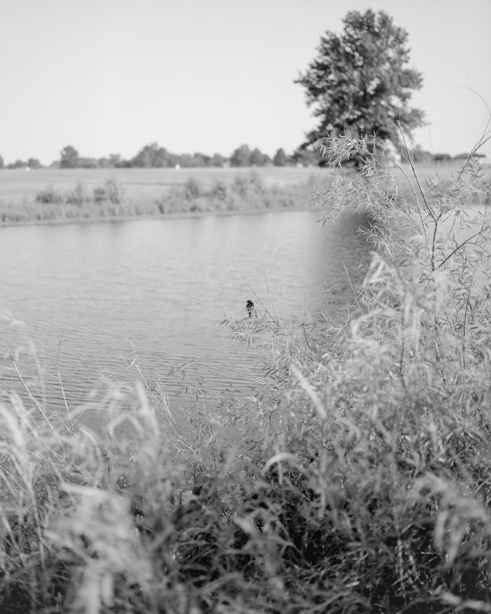
Point Nemo — the point in the ocean farthest from land one can reach on Earth

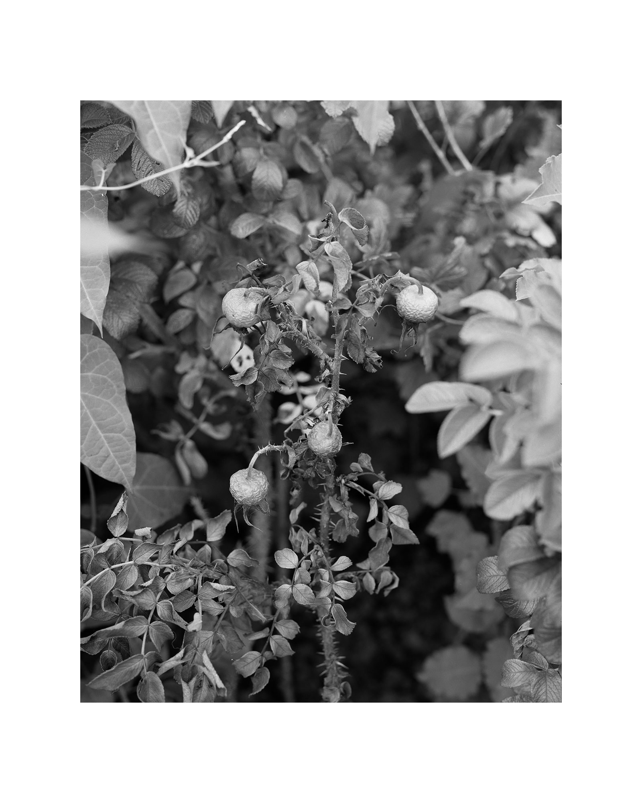